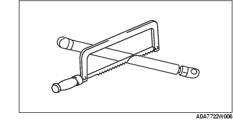

-
Note
-
• The gas in the stay damper is colorless, odorless, and non-toxic.
1. Wear protective eye wear.
2. Lay the stay damper flat.

3. Saw through the stay damper body using a hacksaw.
4. Allow the gas to escape from the stay damper.
5. Discard the stay damper.